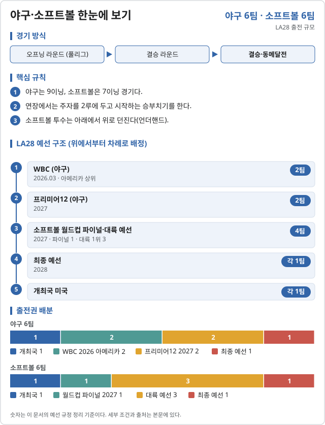

야구·소프트볼 (Baseball and softball)

LA28 출전 확정 2026-11-06 기준
| 국가 | 경로 | 비고 |
|---|---|---|
| 개최국 | ||
| 2026 WBC 아메리카 상위 | ||
| 2026 WBC 아메리카 상위 |
| 국가 | 경로 | 비고 |
|---|---|---|
| 개최국 |
야구 남은 3자리는 2027 프리미어12(2팀)와 2028년 3월까지 열리는 최종 예선(1팀)에서 정한다.
LA28 예선 단계 2026.10.31 기준
![야구·소프트볼 LA28 예선 단계. 야구 (6팀): 2026 WBC (아메리카 몫) (2026.03, 종료, 아메리카 상위 2팀 → LA28) → 2027 WBSC 프리미어12 (도쿄) (2027.11.08 – 21, 예정, 아시아 최상위 1팀 · 유럽/오세아니아 최상위 1팀 → LA28, 한국 아시아 몫 후보 (중국·대만·일본·한국)) → 아시아야구선수권 등 대륙 대회 (2027 (예정), 예정, 아시아 미확보 상위 2팀 → 최종 예선, 한국 프리미어12에서 못 따면 이 길) → 최종 예선 (~2028.03, 예정, 우승 1팀 → LA28) → LA28 본선. 소프트볼 (6팀): 2027 여자 소프트볼 월드컵 (레드클리프) (2027.04.05 – 11, 예정, 미확보 최상위 1팀 → LA28) → 아시아·오세아니아 예선 (사오싱) (2027.09.10 – 15, 예정, 우승 → LA28 · 2·3위 → 최종 예선, 한국 출전 예정) → 최종 예선 (~2028.03, 예정, 우승 1팀 → LA28) → LA28 본선.](assets/pathways/olbaseball.svg)
| 단계 | 시기 | 상태 | 다음 단계 | 결과·진출 | 한국 |
|---|---|---|---|---|---|
| 2026 WBC (아메리카 몫) | 2026.03 | 종료 | 아메리카 상위 2팀 → LA28 | ||
| 2027 WBSC 프리미어12 (도쿄) | 2027.11.08 – 21 | 예정 | 아시아 최상위 1팀 · 유럽/오세아니아 최상위 1팀 → LA28 | 아시아 몫 후보 (중국·대만·일본·한국) | |
| 아시아야구선수권 등 대륙 대회 | 2027 (예정) | 예정 | 아시아 미확보 상위 2팀 → 최종 예선 | 프리미어12에서 못 따면 이 길 | |
| 최종 예선 | ~2028.03 | 예정 | 우승 1팀 → LA28 |
| 단계 | 시기 | 상태 | 다음 단계 | 결과·진출 | 한국 |
|---|---|---|---|---|---|
| 2027 여자 소프트볼 월드컵 (레드클리프) | 2027.04.05 – 11 | 예정 | 미확보 최상위 1팀 → LA28 | ||
| 아시아·오세아니아 예선 (사오싱) | 2027.09.10 – 15 | 예정 | 우승 → LA28 · 2·3위 → 최종 예선 | 출전 예정 | |
| 최종 예선 | ~2028.03 | 예정 | 우승 1팀 → LA28 |
아메리카 예선(2027.08.31–09.04)과 아프리카·유럽 예선(2027.09.28–10.03, 바르셀로나)도 1팀씩 보낸다.
2026 주요 대회 결과 2026-11-07 10:09 KST
위키백과 대회 문서에서 자동으로 모은다. 대회 중에는 한 시간마다 새로 읽는다. 한국 선수가 있는 줄은 붉게 칠했다. 하계 실시간 전체 →
아이치·나고야 아시안게임 소프트볼 아이치·나고야 · 09.26~10.03 종료 결과 1/1종목 · 한국 금0 은0 동0
| 종목 | 금 | 은 | 동 |
|---|---|---|---|
| Medalists | |||
| 여자 | |||
출처: 위키백과 Softball at the 2026 Asian Games · 2026-11-06 21:10 읽음
아이치·나고야 아시안게임 야구 아이치·나고야 · 09.21~09.27 종료 결과 1/1종목 · 한국 금1 은0 동0
| 종목 | 금 | 은 | 동 |
|---|---|---|---|
| Medalists | |||
| 남자 | |||
출처: 위키백과 Baseball at the 2026 Asian Games · 2026-11-06 21:10 읽음
예선 규정
| 경로 | 팀 수 | 단위 |
|---|---|---|
| 야구 · 개최국 | 1 | 팀 |
| 야구 · WBC 2026 · 아메리카 | 2 | 팀 |
| 야구 · 프리미어12 2027 | 2 | 팀 |
| 야구 · 최종 예선 | 1 | 팀 |
| 소프트볼 · 개최국 | 1 | 팀 |
| 소프트볼 · 소프트볼 월드컵 파이널 2027 | 1 | 팀 |
| 소프트볼 · 2027 대륙 예선 (1위) | 3 | 팀 |
| 소프트볼 · 최종 예선 | 1 | 팀 |
예선 일정
| 대회 | 기간 | 장소 |
|---|---|---|
| WBSC 프리미어12 | 2026.11 | 미정 |
| 소프트볼 세계컵 결승 | 2027.04 | 미정 |
| 최종 예선 | 2028.03 이전 | 미정 |
직전 올림픽 메달리스트
2024 파리 올림픽 미채택 · 해당 없음
대한민국
확보 쿼터: 미정. 예선 결과 발표 후 갱신한다.